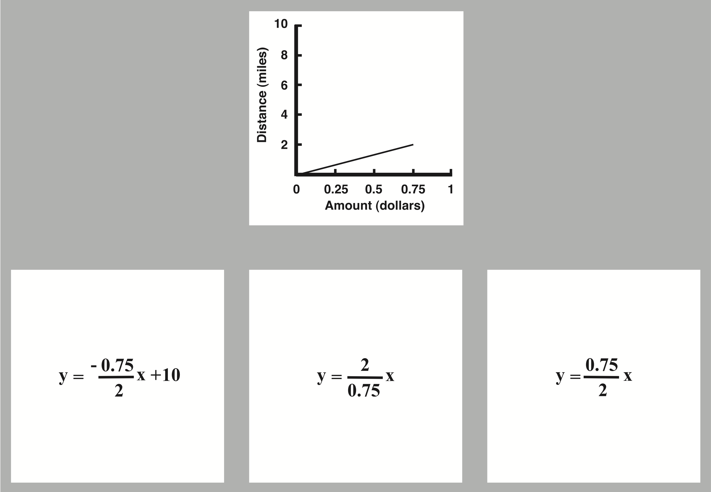

Remarkable Gains on Cognitive Tasks
Will Crichton, 8/5/2023
I enjoy reading psychology or education papers where people make remarkable gains on a difficult cognitive task, usually via training or via a new representation of the problem. In this note, I wanted to share a few of my favorite such papers. In particular, these papers have two things in common:
- Each paper focuses on a well-specified, small-scale cognitive task, as opposed to tasks that are open-ended, take a long time, or are physical in nature.
- Participants enter the experiment with average performance for their background. Participants leave the experiment with massively improved performance. We're not talking "p < 0.05", we're talking "d > 1.0".
In the digit span task, the experimenter reads out a sequence of numbers, such as: 5, 9, 2, 5, 1, so on. Afterwards, the participant repeats back the sequence in order. This task is a classic test of working memory, or a person's ability to remember arbitrary information in the short-term. Most people can only perform this task accurately up to about 7 digits. But in this paper:
"We describe our analysis of a single subject (SF) who has become an expert at the digit-span task. Over the course of 2 years, involving over 250 hours of laboratory practice, SF has steadily increased his digit span from 7 digits to about 80 digits. SF's current digit span exceeds that of normals by more than a factor of ten, and his span is four times higher than has ever been recorded In the literature before."
The researchers picked a willing undergraduate, SF, with "average memory abilities and average intelligence for a college student". Then "SF was run on the memory span task for about an hour a day, 2 to 5 days a week, for over two years". The paper recounts a made-for-TV story:
"SF started out just like virtually all the naive subjects we have ever run. [...] On Day 4, SF [told us that] he had reached his limit and no further improvement was possible. And then, on Day 5, something very interesting happened. There was a large improvement in SF's digit span (a jump of 4 standard deviations from the day before), and, for the first time, SF began to report the use of a mnemonic aid. From this point on, SF showed a steady increase in his digit span as he developed his mnemonic system and the accompanying control structure."
Without prompting from the researchers, SF devised a completely novel mnemonic based on chunking digits into running times (i.e., plausible durations for a person to complete a run). "For example, 3492 is coded as "Three forty-nine point two, near-world-record mile time."" To test whether the running-times mnemonic was essential to SF's success, the researchers created an algorithmic model of his chunking strategy, and used it to create a digit sequence that would be intentionally difficult to chunk as running times. "When SF was faced with these uncodable sequences, his performance dropped back almost to his beginning level."
The paper goes on to discuss more topics such as SF's hierarchical encoding of long sequences. They conclude by arguing that SF's performance demonstrates the need for a refined theory of memory:
"The most interesting implication of our results is that skilled memory seems to require rapid access to a large number of intermediate knowledge states, allowing the memory expert to bypass the limits of short-term memory. We propose that the traditional view by current cognitive theory that short-term memory is the storage mechanism for intermediate knowledge states must be reconceptualized. Short-term memory simply does not have the necessary capacity to handle the large number of intermediate knowledge states that are heeded for skilled memory performance in some domain."
I love so much about this study. Finding an average student, and working with them for two years to demonstrate record-breaking performance on an impractical memory task. It's the complete opposite of the average "one-hour user study of 50 students" experiment that's common today.
In the Wason selection task, participants are asked to solve a logic puzzle with conditional reasoning. The puzzle involves two-sided cards along with a rule like "if a card has an odd number on one side, then it must have a vowel on the other side." Participants are presented with one card in each of four conditions (letter-side-up vowel card, letter-side-up consonant card, etc.) and asked: "do you need to turn the card over to know whether it satisfies the rule?"" In this setting, only 10% of average adult participants will answer correctly.
Research has demonstrated that accuracy can be substantially improved by reframing the situation from an abstract one (letters and numbers) to a familiar one, such as: "these cards are receipts. If the receipt contains alcohol on one side, it must contain the manager's signature on the other side." But this paper tackles the problem head-on: how do you help people do better in the abstract case? With three careful tweaks to the experiment, the researchers achieved "one of the highest correct selection rates ever observed for any version of the selection task: over 80% correct."
The three tweaks were:
-
Explicating the implication: Prior evidence suggested that participants may misunderstand the logical structure of the implication. The researchers addressed this by adding an "explication statement". They tried several, and the most successful one was:
"A card with an odd number on it can only have a consonant, but a card with an even number on it can have a vowel or a consonant."
With this explication statement, accuracy jumps from 10% to 40%.
-
Prompting for reasoning: The researchers felt that participants were not carefully considering their choices, and so modified the experiment to ask participants to explicitly justify their choice of selection in writing. This improved accuracy from 40% to 67%.
- Emphasizing rule violation: The previous two experiments asked participant to select cards that test "whether the rule is true or false". The researchers modified the wording to ask "whether or not the rule is violated", believing that the wording would better cue the appropriate reasoning strategy. Indeed, this improved accuracy from 67% to 81%.
I like this finding because programming is often about abstract logical reasoning, and the tool of "just cast your problem as something more familiar" is not always readily available. The modifications to the experiment likely represent more general principles of facilitating abstract reasoning: explaining the trickiest parts, encouraging System 2 over System 1, and finding connections to other strategies. But for the researchers, they concluded more simply:
"We take comfort in the fact that, after about 27 years, a version of Wason's abstract selection task has been found for which competence is easily displayed."
In the chick sexing task, a person looks at the genitalia of a day-old chick to determine its sex. This task has practical applications on a chicken farm, and "professional sexers can classify 1,000 chicks per hour at over 98% accuracy." Historically, professional sexers gained their expertise through years of practice. This paper describes an attempt to distill a sexer's expertise into a form quickly teachable to novices.
Working with a professional sexer, the researchers developed a theory of which perceptual features the expert was using to make his classifications. (I won't reproduce the pictures of chicken genatalia here, but you can read the paper.) They determined that particular arrangements of certain folds of skin were sufficient to distinguish male from female. The researchers distilled this observation into a short worksheet.
The researchers ran an experiment comparing the sexing accuracy of novice and professional sexers, where the novices were trained using the worksheet. They found that the worksheet improved overall sexing accuracy from 60% to 84%. While experts performed more accurately on the common cases, trained novices had expert-level performance on the rare cases.
I like this paper because it speaks to the value of direct instruction over pure experience. The researchers specifically note that:
"Not a single sexer recalled being shown simple diagrams such as those in Figure 3 as part of their training. Training was accomplished by sexing live birds, which were then checked by experts."
In general, I suspect that people overestimate the value of hands-on learning and underestimate the value of direction instruction done properly.
A translation problem in high school algebra is to take a mathematical equation in one representation (words, symbols, graph) and convert it into another representation. This paper evaluated the use of a "perceptual learning module" (PLM) to help high schoolers solve translation problems. In the PLM, students work at a computer to answer problems like this:
Given a reference (the graph), the student must pick which of the three options (the symbolic equations) is semantically equivalent. The key idea is that students are encouraged to answer as quickly as possible. After answering, the student is told which was the correct answer, and then immediately move on to the next problem. The goal of this training setup is to help students build perceptual heuristics for quickly identifying the salient information needed to make a snap judgment. Students worked through 2 sets of 60 questions in this form.
Researchers had a control group of students spend the same length of time working through a packet of translation problems of the same form as on the test (with access to an answer key). The control training improved scores on translation problems (using a pre-test and post-test) by less than 10%. By contrast, the PLM improved scores by 50%! The researchers conclude:
"The remarkable fact that the PLM group performed better on this transfer task than a control group that practiced the actual task suggests that the PLM produced improvements in structure extraction that are useful to other mathematical skills, such as representation generation."
I'm really fascinated by these kinds of results where training on a secondary objective (the PLM) better achieves the primary objective (solving translation problems) than training on the primary objective itself. These results hint at the underlying structure of expert performance, e.g. that algebraic expertise is as much perception as abstract thought.